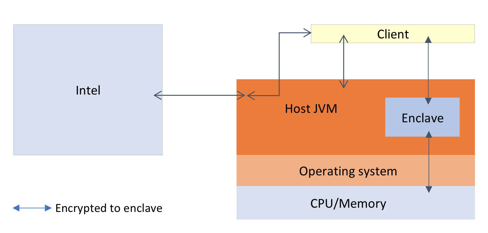

Architecture overview¶
If you are new to the concept of Confidential Computing, you may also find the introduction to enclaves document helpful.
Primary entities¶
There are three entities in an application that uses Conclave:
- Clients
- Hosts
- Enclaves
Clients send and receive encrypted messages to/from enclaves by interacting with the host over the network. Conclave doesn't mandate any particular network protocol for client<->host communication. It's up to you. However the content of the messages is defined, using the Mail API. Mail is described below.
Host programs load enclaves. From a security perspective they are fully untrusted and assumed to be malicious at all times. Hosts are relied on to provide the enclave with resources but beyond that work only with encrypted data. In some kinds of app their function is primarily proxying communications from clients to enclaves, but sometimes they also assist with application logic. Hosts use a standard JVM like HotSpot.
Enclaves are classes that are loaded into a dedicated sub-JVM with a protected memory space, running inside the same operating system process as the host JVM. Code running in an enclave cannot be tampered with by the host system or its owner, nor can the host system or its owner see the data that the enclave is processing. Enclaves communicate with clients via the host program.
To understand Confidential Computing in general, and Conclave in particular, it is helpful to keep in mind at all times that the primary purpose of the system is to enable clients securely to share data with an enclave, which will faithfully execute a specified algorithm without revealing anything to the potentially malicious host on which it runs.

In the above diagram orange shaded boxes are untrusted and could attack the enclave. Notice how this threat model is extensive: we assume both the host and the operating system could be malicious, and this includes the BIOS, drivers and peripherals.
By contrast, blue shaded boxes are assumed reliable. We say they are part of the trusted computing base - the set of components that must be correct and non-malicious for the system to work. That includes the enclave and of course the CPU.
The client communicates with the enclave via the untrusted host. The enclave has a complex interaction with both operating system and host. For example, the OS schedules the enclave onto the CPU and provides resources, but is otherwise locked out of the enclave's operation. For its part, the enclave cannot interact with the OS directly and runs in what is effectively a "bare metal" embedded style environment. It cannot load DLLs/.so files or do system calls, so there's no way for it to do things like load files directly. It must ask the host to do it and use cryptography to prevent the malicious host from tampering with the data as it's loaded or saved. The purpose of Conclave is to hide this complexity to the greatest extent possible.
Notice
Because the enclave runtime environment isn't the same as a normal HotSpot JVM, you will need to test your enclave code carefully and avoid advanced features that the embedded JVM doesn't support, such as Java Flight Recorder.
Pulling it all together¶
So much for the theory. How do all the pieces fit together? In what follows, we cover some of the key concepts.
- How does a client know it's really talking to an enclave?
- How does a client decide whether to trust any given enclave?
- What is the flow of communication in a typical application?
- How does data get from a client to an enclave without the host being able to spy on it?
- What deployment modes are available on the journey from unit testing to production?
- Can Conclave be deployed to the cloud?
Remote attestation¶
Clients need to be sure they really are communicating with a real enclave. They cannot rely on the host merely to assert that this is the case because the host could be malicious. Instead, a process of 'remote attestion' is employed. Here is how it works.
First, clients need to obtain an EnclaveInstanceInfo object. This could be downloaded on demand from the host,
or it could be published somewhere. This object encapsulates a remote attestation, which includes information
such as the hash of the code inside the enclave, the hash of the key of any party who has signed that code,
the security status of the machine on which the enclave is running, and a public key whose private counterpart
is known only to the enclave. The remote attestation encapsulated within the EnclaveInstanceInfo object
is a signed data structure, with the CPU manufacturer (Intel in the case of SGX) as the root of trust. In this way,
the client can have confidence about the nature of the enclave with which they are interacting even though the party
from whom they obtain the EnclaveInstanceInfo is the untrusted host.
The client tests the EnclaveInstanceInfo against a set of constraints, depending on how flexible they want to be
about software upgrades to the enclave. Constraints are represented by an
EnclaveConstraint object, which can be read from/written to
a small domain specific language suitable for embedding in config files, command line options and so on. A
constraint may specify that a specific set of code hashes is required i.e. every version is whitelisted and no
upgrade is possible until the constraint is adjusted. Or, it may specify a set of allowed signing keys, enabling
enclave authors to release new versions whenever they want. In that scenario the enclave creator is trusted,
but the entity hosting the enclave instance may not be.
When they're happy, they create encrypted messages using the key in the EnclaveInstanceInfo. By sending and
receiving such messages to the host (and from there to the enclave), communication is established. See the Mail
section below for further discussion of this.
Whilst the high level setup has just those three entities, real deployments have more:
- Intel
- Optionally, a cloud provider
- Optionally, an auditor
Intel. Intel's involvement in a deployed architecture is limited to providing the CPU hardware and running some servers. These servers provision the host with certificates guaranteeing authenticity of the chip (once, on initial setup) and provide the client with an assessment of the security of the host given a remote attestation (whenever the client requests it). If Intel's servers become unreachable by the clients that's not a problem, it just means the security of the host machine may degrade without the clients realising.
For instance if the host's SGX software stack is out of date and has known vulnerabilities, or if the BIOS configuration is not correct, this will be reported to the client by Intel's servers as part of verifying and processing the data inside the remote attestation provided by the host.
Cloud provider. A cloud provider needs to support SGX for Conclave to be usable. They may operate their own provisioning servers that take over from Intel's. Instructions for using Conclave on Microsoft Azure are available.
Auditor. In the pure enclave-oriented model, the user is responsible for understanding what the enclave does before using it by reading the enclave's source code. If the user doesn't do this then enclaves have no point. In practice the user may wish to outsource this auditing to someone else.
Deciding whether to trust an enclave¶
Conclave makes it easy to write clients that understand remote attestations and to impose constraints on those attestations to ensure users only communicate with enclaves that are trusted. But how do users decide what these constraints should actually be? There are multiple options, but three of the most common are as follows:
In the first model, the application developer gives the source code of their app to the customer. The customer reviews the code to check it meets their needs and is non-malicious. If so, they compile it for themselves using the Conclave SDK to determine the hash of the enclave that should be running on the remote server. They can then use this hash as their enclave constraint. If the code they reviewed and compiled for themselves is running, their client will connect. Otherwise, the client will refuse to communicate with the enclave.
In reality, very few end-users would have the ability or inclination to perform this level of review for themselves and so a trusted third party - an auditor - can be engaged. To simplify matters, they can also be asked to compile the enclave. They give the compiled enclave to the application developer to host, and the hash to the customer.
In situations where the code of an enclave may change fairly rapidly, this approach may not be sufficiently agile. If so, a third approach can be employed. In this model, the auditor reviews the code associated with each new enclave update and signs the resulting enclave if they are satisfied. The customer uses a signature constraint that tells their client to trust any enclave that has been signed by that auditor.
Protocol sequence diagram¶
This is what a typical interaction looks like:

The first time SGX is used on a machine there are interactions with either the cloud provider or Intel to retrieve
machine certificates proving authenticity. The host then gets a remote attestation (EnclaveInstanceInfo) to the
client somehow, the client verifies it and optionally asks Intel if the hardware setup of the machine is still
considered to be secure, or if there are known vulnerabilities (see renewability). This can be
repeated as often as the client wants, e.g. every day. Once this is done the client can send messages to the enclave
through the host.
Mail¶
Communicating with an enclave requires sending and receiving encrypted and authenticated messages. One possible approach is to embed a TLS stack into the enclave and use something like HTTPS, but this technique has some problems and limitations that are resolved via the Conclave Mail API. Mail makes communication between enclaves and clients easy, as well as solving common problems faced with doing application development.
Testing and debugging¶
Conclave provides full unit testing support for enclaves. Enclaves themselves can be compiled for one of four modes:
- Production/release: fully encrypted and protected memory.
- Debug: the same as production, but special instructions are provided that allow enclave memory to be read and modified. This mode provides no protection but is otherwise a faithful recreation of the standard environment.
- Simulation: SGX hardware isn't actually used at all. This is helpful during development when SGX capable hardware may not be available but does still require a Linux environment or a Linux Docker container to run.
- Mock: In mock mode the enclave class runs in the same JVM as the host, so interactions between the enclave and host are all just regular function calls. You can step through using a debugger and enjoy the regular Java development experience. See here for more information on using and configuring mock mode.
The modes must match between how the enclave was compiled and how it's loaded. This is handled for you automatically.
Inside the enclave System.out and System.err are wired up to the host console, but there's no filesystem access.
In release mode any output to stdout and stderr is suppressed inside the enclave so you can log to stdout and
stderr without worrying that it may leak information outside the enclave when in production.
Notice
Future versions of the platform may automatically set up encrypted logging. For now, if you want release mode logging you can log to the in-memory filesystem and export logs from time to time to a trusted client or another enclave. Alternatively you may decide that due to the sensitive nature of what your enclave does, nobody should receive its logs when in release mode: this is a perfectly normal and reasonable choice!
Deployment¶
You can get SGX capable virtual machines from cloud providers. Currently Microsoft Azure provides the easiest, up to
date source of SGX VMs. A Conclave host app includes the enclave bundled into the same JAR and the native libraries
required for working with the kernel driver and Intel infrastructure, so you can deploy a Conclave app by simply using
regular Java deployment procedures. For example, use the Gradle assemble plugin to create a tarball/zip of your
app, or create a fat JAR and copy it to the server.